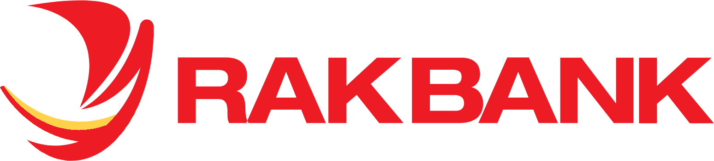

CLM Platform
Redesigned RAKBANK's Customer Lifecycle Management platform from a patchwork of disconnected legacy tools into a single unified compliance system — now used by every KYC analyst at the bank.
Built for clarity, trusted at scale

Where it all started
When I joined RAKBANK, there was no unified tool for managing customer due diligence. The compliance team was navigating 6+ disconnected screens — each built by a different team, at a different time.
Analysts had come to accept the friction. Opening multiple tabs for a single customer review was just part of the job. Nobody had a full picture of any customer.
So I set out to change that.
At the start, it was just me — one designer, a fragmented system, and 900K+ customers whose data was spread across it.
What I was solving for
We wanted to build something that felt like a precision tool built for experts — not a legacy database interface that analysts had to fight to use.
Why do I need 6 tabs just to review one customer?
Where did this customer's risk rating change?
The core design challenges
- Build clarity from complexity — no hidden data, no guesswork
- Create a single unified view across fragmented data sources
- Make compliance feel like expert control, not bureaucratic overhead
- Scale for 100+ analysts without losing structure or speed
"This is the first time I can see everything I need on one screen. I used to keep six tabs open just for a single customer."
— KYC Analyst, RAKBANK
How I approached it
I mapped the platform from the ground up — every screen, every state, every edge case. There was no existing pattern inside RAKBANK for this kind of tool, so I started with deep discovery before touching Figma.
Customer Universe
A single, searchable view of every customer at the bank. Analysts filter by segment, risk profile, KYC status, and review dates — replacing the fragmented search that used to be spread across separate systems.

Customer Profile
One page for the full picture of a customer — case details, routing history, KYC status, and the decision panel side by side. Everything an analyst needs to review and act, without opening a single extra tab.

The journey
-
Discovery & research
12 interviews and three weeks observing real reviews to understand where analysts actually lost time.
-
Information architecture
Audited three legacy systems and mapped every entity to design the consolidated data model.
-
Design system foundations
Built shared patterns and components first, so every new screen stayed consistent and fast to ship.
-
Phased delivery
Shipped module by module — dashboard, customer universe, profile — validating each with analysts.
-
Adoption at scale
The platform became the single daily tool for the entire compliance function across the bank.
Design that changed behavior
The key was making compliance feel like expert control — not bureaucratic overhead.
Analysts don't read data dictionaries. They scan for signals of clarity and trust. So instead of surfacing every raw field, we gave them context, structure, and decisions that made sense for the task at hand.
- Single-page customer profile replaced a 6-screen workflow
- Context-aware action panel — only the actions valid for the current case state
- Inline document preview kept analysts in flow, no external PDF viewer
- Risk change timeline made provenance visible — analysts finally trusted the data
- Role-based dashboard views for analysts, officers, and operations managers

Case Review
What happened next
The platform became the single tool for every compliance review across RAKBANK.
- Every KYC analyst onboarded onto one consistent workflow
- Full customer reviews completed in a fraction of the previous time
- Three legacy systems decommissioned in favour of one platform
- The customer profile became the team's daily home base
Looking back
What started as a UX cleanup turned into a market-defining platform for compliance at the bank.
The CLM didn't just improve the interface — it changed how analysts felt about their work. From scattered and frustrated, to structured and in control.
It reinforced that great enterprise design isn't about feature completeness — it's about trust, clarity, and giving experts the right signal at the right moment.
Want to talk through the details?
Happy to walk through the design decisions, the research, and what didn't make the cut.
Get in touch